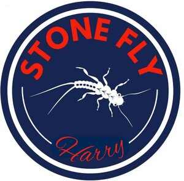
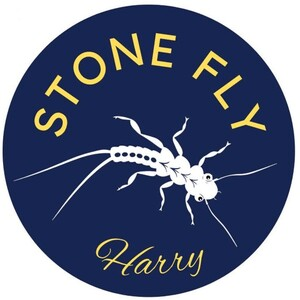

Trade Mark Journal No.2025/034 22 August 2025
UK00004245964 7 August 2025 (8,25,28)
Mark 1
Mark 2

Mark 3

- Class 8
- Fishing pliers; Fishing knives; Fishing line cutters.
- Class 25
- Fishing waders; Fishing footwear; Fishing boots; Fishing clothing; Fishing vests; Vests (Fishing -); Fishing jackets; Fishing shirts; Fishing headwear; Fishing smocks; Waterproof boots for fishing; Rubber fishing boots.
- Class 28
- Fishing tackle; Tackle (Fishing -); Fishing tackle bags; Fishing tackle boxes; Lures for fishing; Fishing lures; Lures for hunting or fishing; Hooks for fishing; Fishing hooks; Fishing creels; Rods for fishing; Fishing rods; Fishing reels; Reels for fishing; Fishing tippets; Landing nets for fishing; Fishing lure boxes; Fishing spinners; Bags for fishing; Floats for fishing; Fishing equipment; Hunting and fishing equipment; Lures (Scent -) for hunting or fishing; Fishing reel cases; Fishing fly boxes; Lines for fishing; Fishing lines; Fishing leaders; Artificial baits for fishing; Lures [artificial] for fishing; Handheld fishing nets; Fishing rod handles; Fishing rod cases; Fishing rod shaped game controllers for fishing games; Fishing plugs; Fishing line casts; Fishing rod rests; Fishing rod supports; Fishing rod holders; Bags adapted for fishing; Angling nets; Landing nets for anglers; Landing nets [for anglers]; Fish lures; Rod blanks (Fishing -); Lures for hunting; Hunting lures; Tungsten weights for fishing; Nets for use by anglers; Fish hooks; Line casts for fly-fishing; Bait bags for holding live bait; Floats for angling; Fishing floats; Fishing ground baits; Bait (Artificial fishing -); Artificial fishing bait; Fish hook removers being fishing tackle; Fishing tackle floats; Swivels [fishing tackle]; Creels [fishing traps]; Artificial flies for use in angling; Artificial fishing worms; Nets (Landing -) for anglers; Bite sensors [fishing tackle]; Bite indicators [fishing tackle]; Inflatable fishing float tubes; Hooks (Fish -).
SIMON Sharratt